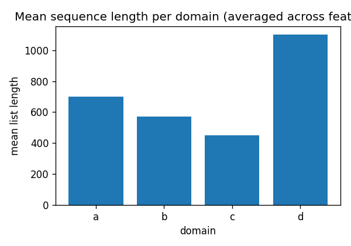

RECSYS RESEARCH / 2026 / TAAC 2026
Tencent UNI-REC Challenge, 멀티도메인 통합 추천 백본
역할 개인 (분석, 모델링, 인프라 전부)
기간 2026.04 ~ 2026.06
PyTorchTWINHSTUDCN-V2MMoE / PLEDANNClaude Code 서브에이전트
문제
Tencent가 익명화한 4개 도메인 데이터에서 단일 backbone으로 전환확률(CVR)을 예측하는 과제입니다. feature가 숫자 id로만 익명화되어 무엇을 모델링할지 데이터로 역설계해야 했습니다.
- 시퀀스가 길고(p90 887 ~ 2215) 전환이 불균형(12.4%).
- 4개 도메인 vocab이 거의 분리(Jaccard 0.7 ~ 10%).
- target item이 history에 0.4%만 등장하는 extrapolation regime.

도메인별 시퀀스 길이 분포. 길고 불균형한 시퀀스가 모델 선택을 좌우했다.
접근
- 실패 모드를 EDA로 먼저 규명. 단변량 GBDT로 item_int_13 하나가 전환율을 12.4%에서 64%로 가른다는 signal 발견.
- 추천 SOTA를 논문에서 직접 구현. TWIN 2-stage long-seq retrieval, HSTU, DCN-V2, 양방향 cross-attention, MMoE/PLE, DANN debiasing. model.py 약 2,400줄.
- 재현가능 하네스. 가설 → experiment-card → 클라우드 학습 → verdict → registry 루프를 Claude Code 서브에이전트로 오케스트레이션.
- 인과 격리. 한 실험당 구조 변경 1개(단일변형), split은 항상 label_time 기준(누수 차단), user_id 10% OOF 고정.
결과
0.842
Platform AUC (vanilla 0.835426 → 0.842249)
~2,400
model.py 라인, SOTA 직접 구현
130회 이상의 실험을 전량 {seed, git_sha, config_sha256, compute_tier}로 추적했습니다. 오프라인과 온라인 지표 괴리(Val/OOF +0.0005인데 Platform -0.0042)를 진단해 오프라인 지표 맹신 금지를 데이터로 입증했습니다.
정직성 노트
순위 또는 수상은 아닙니다. 상위권이 아니었고, 큰 레버를 못 찾고 미세튜닝(대부분 +0.0007 수준)에 갇혔다는 회고를 남겼습니다. 이 프로젝트는 순위가 아니라 방법론, 실험 규율, 재현성으로 봐 주시길 바랍니다.